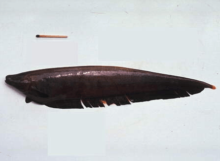
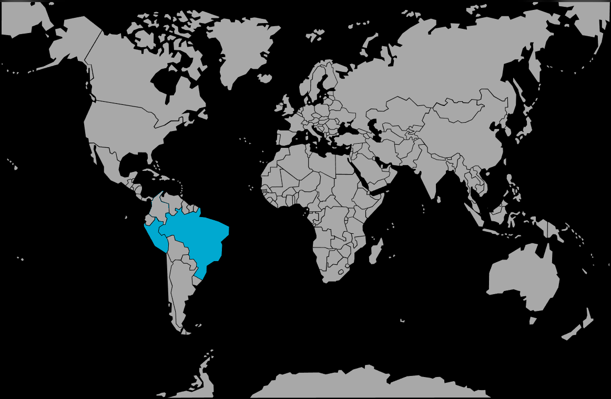

Systématique
- Ordre : Gymnotiformes
- Famille : Apteronotidae
- Genre : Apteronotus
- Espèce : A. hasemani

Apteronotus hasemani est un poisson électrique d'Amérique du Sud appartenant à la famille des Apteronotidae.
Il se distingue par une taille importante pouvant atteindre 38,1 cm (longueur totale). Son corps est très comprimé latéralement et, comme les autres membres de son genre, il ne possède ni nageoire dorsale, ni nageoires pelviennes, se propulsant grâce aux ondulations de sa longue nageoire anale.
La coloration est sombre (brun à noir). Le museau présente souvent des marques claires ou blanches, tout comme le pédoncule caudal qui est généralement encerclé d'une bande blanche. Il possède un organe électrique de faible décharge utilisé pour l'électrolocation.
C'est une espèce benthopélagique qui fréquente les eaux profondes et courantes des grands fleuves. En raison de sa morphologie et de ses organes sensoriels, il est adapté à une vie nocturne ou dans des eaux turbides.
Aucune information précise n'est disponible sur son comportement social spécifique en aquarium amateur (espèce très rare), mais par analogie avec les espèces proches (*A. albifrons*, *A. leptorhynchus*), il est considéré comme territorial envers ses congénères et les autres poissons électriques.
Mode : ovipare.
Aucune information disponible sur la reproduction en captivité.
Dimorphisme sexuel : Les mâles adultes développent un museau extrêmement allongé par rapport aux femelles et aux juvéniles. Ce dimorphisme est si marqué que les mâles ont parfois été confondus avec une autre espèce (*Apteronotus anas*).
Espérance de vie : Aucune donnée spécifique publiée, mais les grands Apteronotidae vivent généralement plusieurs années (souvent plus de 5 à 10 ans).
Il habite les bassins fluviaux de l'Amazone (Brésil, Pérou) et du Paraná-Paraguay. On le retrouve dans les lits principaux des rivières et les zones à courant.
Répartition

Origine naturelle :
- Bassin de l'Amazone (Brésil, Pérou).
- Bassin du Paraná et du Paraguay.
- Bassins du Tocantins et du Capim.
Paramètres de maintenance
Température : 23 à 28 °C (plage tropicale standard).
pH : Aucune donnée spécifique restreinte, probablement entre 6,0 et 7,5 comme la majorité des espèces de ces bassins.
GH : Aucune donnée spécifique.
Courant : Modéré à fort (espèce fluviatile).
Volume conseillé : Au regard de sa taille adulte (38 cm), un volume très important (supérieur à 400-500 litres) est théoriquement nécessaire pour un maintien correct.
Régime alimentaire
Régime : carnivore (prédateur d'invertébrés).
Il se nourrit de larves d'insectes et d'invertébrés benthiques dans la nature. En aquarium, l'alimentation doit être constituée de proies carnées (vers, crustacés).